Campeonato de Cartola
A vitória no cartola é o sucesso do seu time!

Redação Cartola - 04/12/2024 - 17h38min 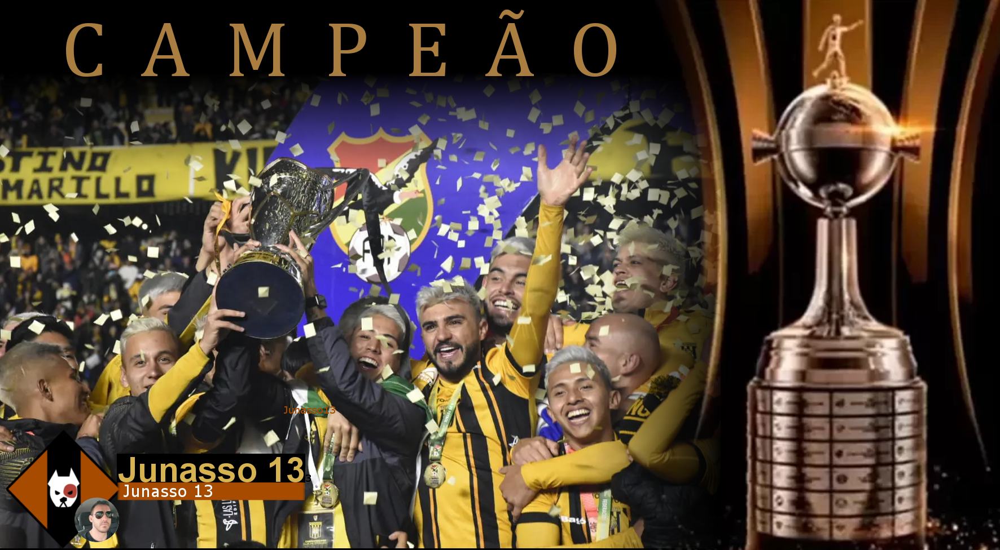
O empate em 2x2 (77,8 vs 74,24) somado à condição de melhor campanha na fase de grupos levou os comandados de Junasso 13, confederado da Liga estreante da "Decreto e Danone"/SP à conquista da competição de maior prestígio no formato interligas.
No papel de estreantes na competição, The Strongest e Junasso 13 iniciaram a jornada rumo ao título jogando pelo grupo “E”, que contatava com Newell’s (Laspezzia fc), Olimpia (UGAO F.C) e o Vasco da Gama (SELEBEST FC), esse último apontado como um dos favoritos ao título. Fato curioso é que, rodadas mais tarde,tivemos o técnico “UGAO FC” (do Olimpia) se tornando campeão da primeira Champions League de Clubes, dessa vez contratado pelo Ajax Amsterdam. Ao final da primeira fase, The Strongest saiu como líder daquele quarteto e dono da terceira melhor campanha geral, cuja a única derrota ocorreu na segunda rodada diante do Olimpia, por 3 x 2.
Na fase de oitavas, não teve dificuldade nenhuma ao passar pelo Goiás do Luian Sporting Club, vencendo duas vezes por 1x0 e 5x2.
Ja nas quartas, encontrou o desafio mais difícil antes da final, vencendo a partida de ida diante do Atlético Nacional do "mas q bons " por 4x3, mas depois sofrendo derrota 2x3, sendo salvo pelo critério de melhor campanha na primeira fase em relação ao adversário.
Na fase seguinte apresentou armas contra o Colo-colo do velho "Mengão Baladeiros", que chegou àem sua quarta participação na Libertadores e a uma inédita participação das semifinais, com o primeiro duelo encerrando em 4x4, com a vaga sendo decidida no jogo de volta, em que o The Srongest venceu por 2x1.
Por fim, o empate em 2x2 na grande final contra o América de Cáli do "Palestra Fox" rendeu ao The Strongest o tão desejado título de Campeão da Copa Libertadores de Clubes de Cartola, igualando-se ao Deportivo Tachira na galeria dos clubes campeões da competição.
Treinador campeão faturou 300 reais e 200pts no ranking geral de treinadores, enquanto o técnico do América de Cali, Palestra Fox, obteve 150 reais. Além disso, The Strongest garantiu vaga direta para a disputa do Mundial de Clubes de Cartola, com estreia na próxima rodada, além de participação na Libertadores e na decisão da Recopa Sulamericana no ano que vem.
Com o título, o Junasso 13, do cartoleiro João Marcos Fonseca, saltou da posição não definida par20ª posição do ranking geral dos melhores treinadores de todos os tempos, chegando à marca dos 200 pontos. 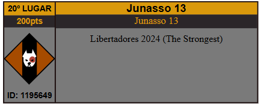
Parabéns Junasso 13. Abaixo, o quadro completo de todas as fases desta sétima edição.
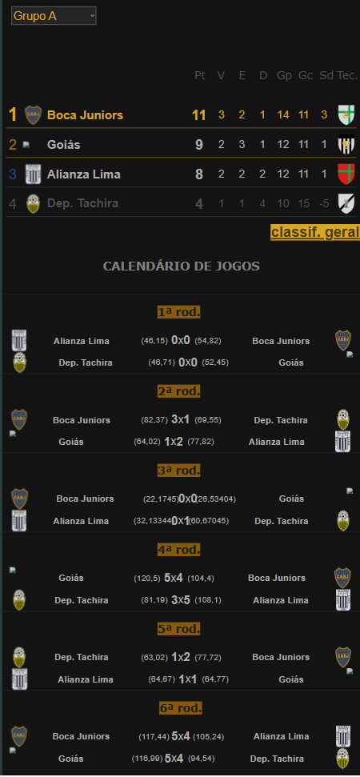
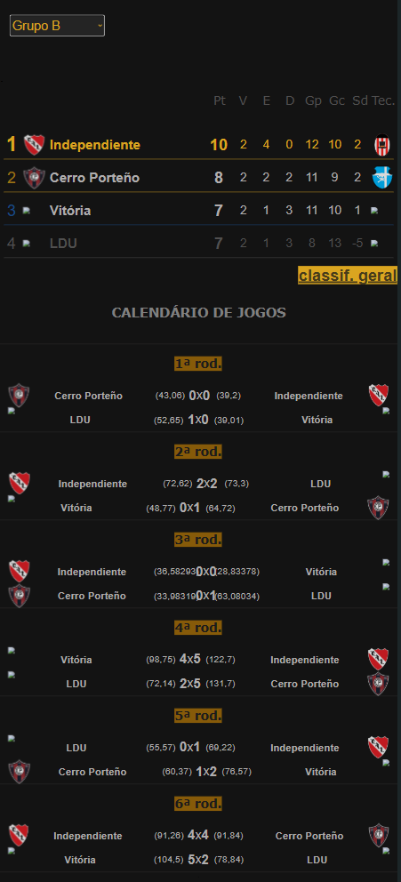
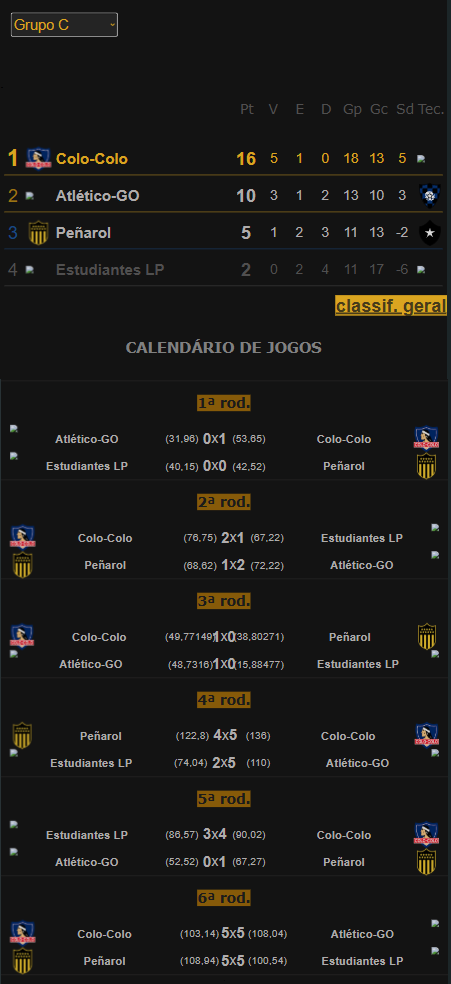
 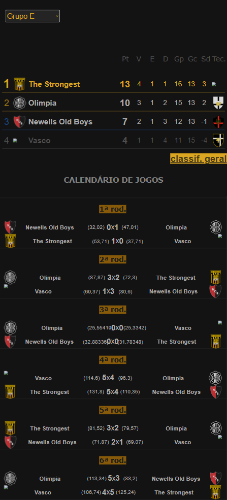
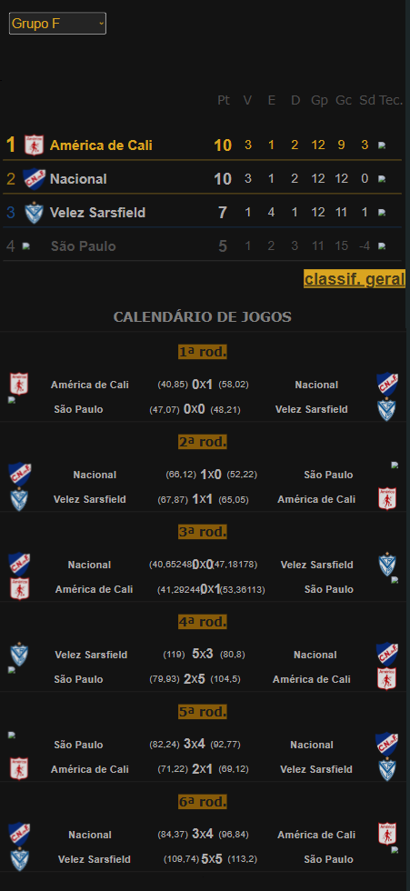
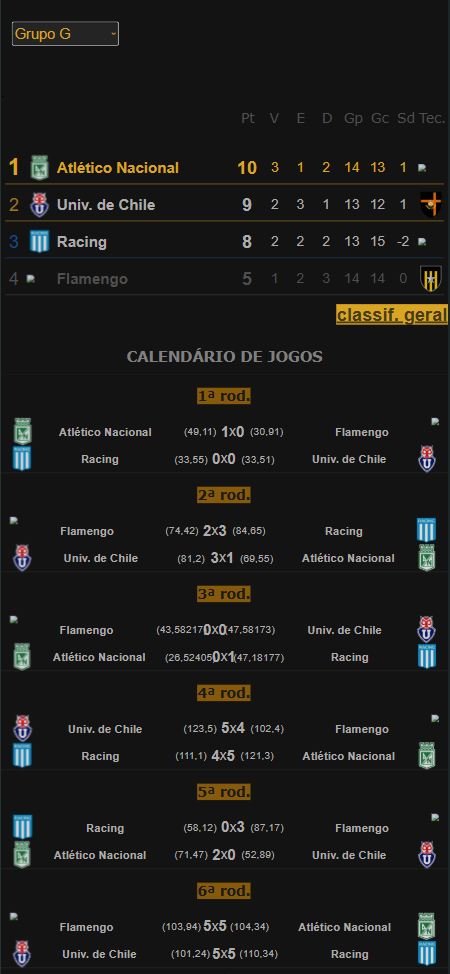
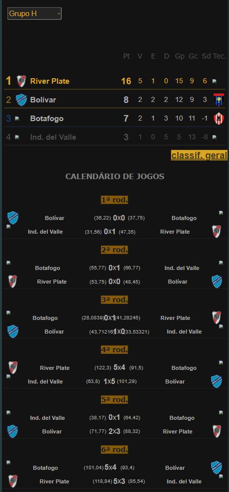
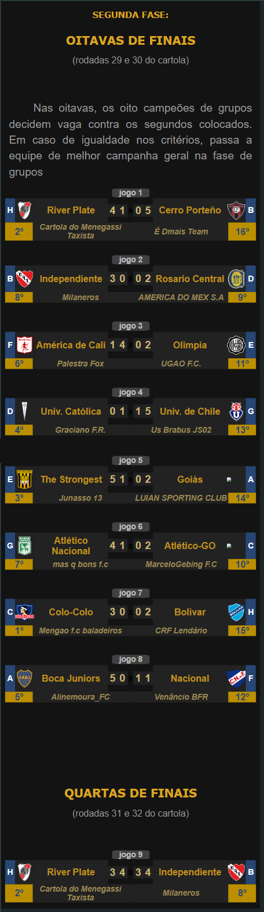
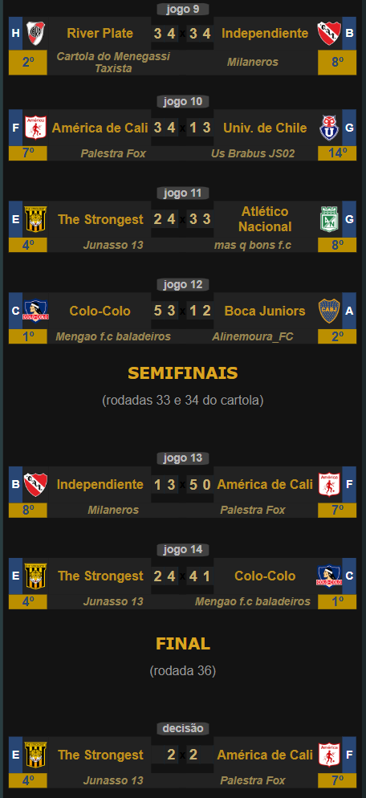
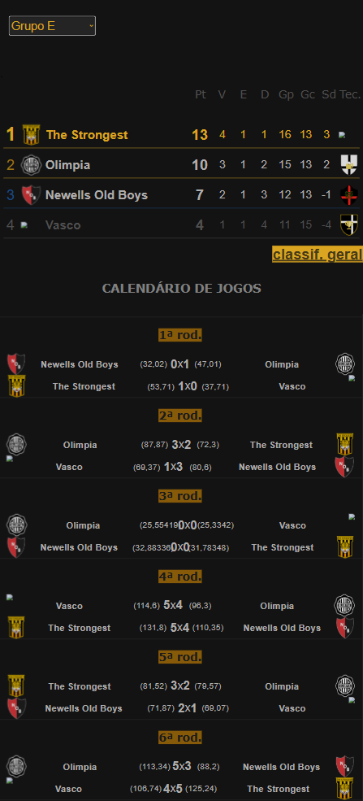
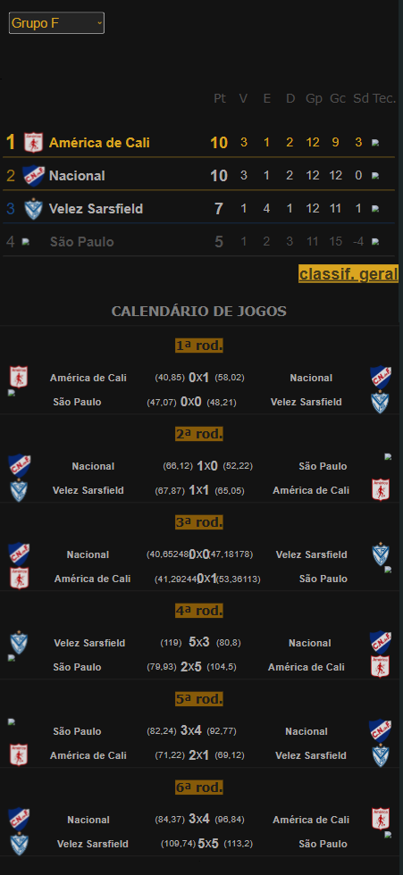
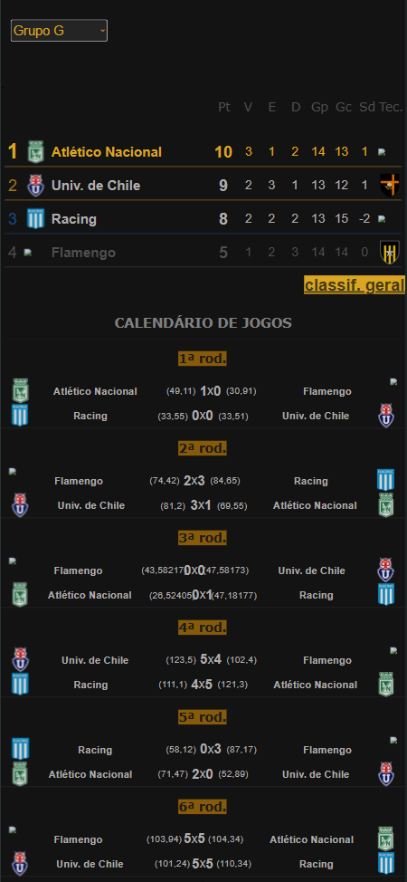
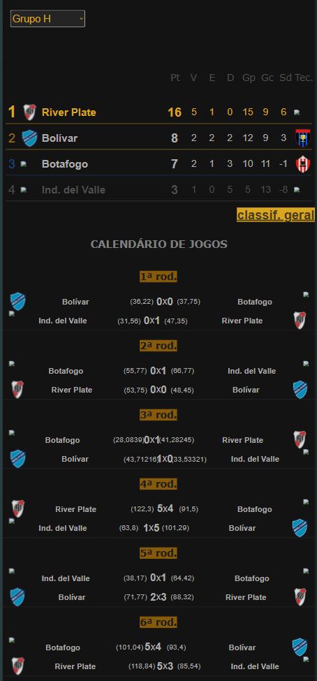
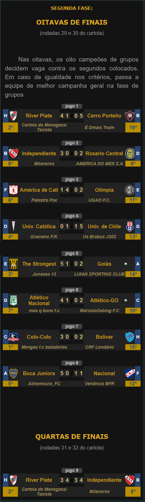
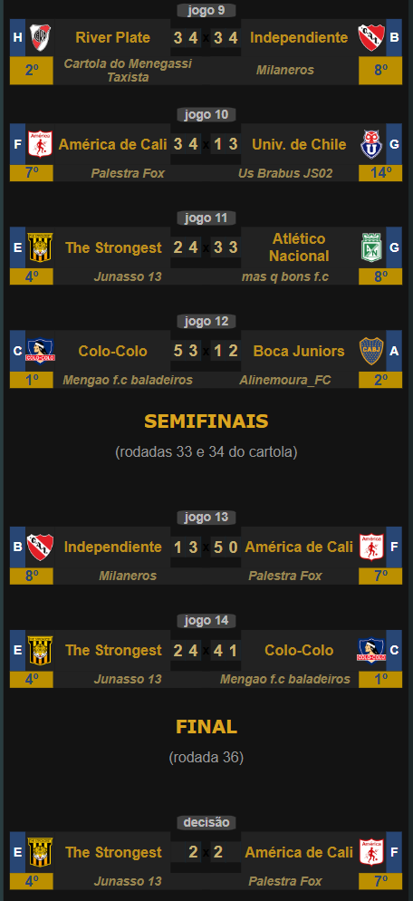